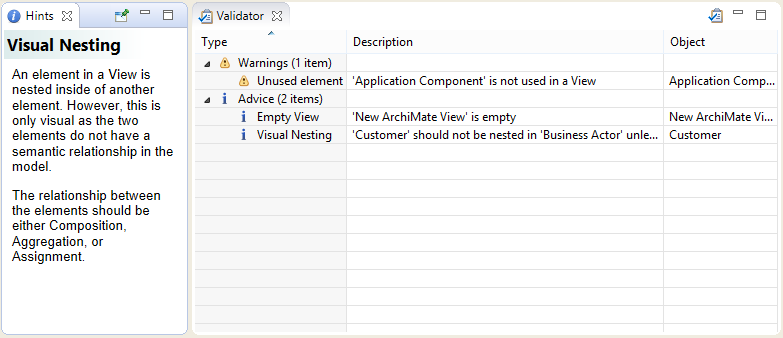
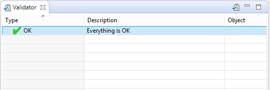

The Validator offers advice and warnings on the integrity of an ArchiMate model. It can highlight the following issues:
The Validator window can be opened from the main "Tools" menu, from the main toolbar, or from the main "Window" menu.
To validate a model, ensure that the model has the focus by selecting it in the Models Tree or selecting one of the model's Views. Then either select "Validate Model" from the "Tools" menu, or from right-clicking in the Models Tree, or in the Validator window itself.
The Validator showing tips
Double-clicking on an issue, or selecting the right-click menu item "Reveal Object" in the Validator window, will reveal the affected object in either the Models tree or a View.
To show an explanatory hint about the issue, ensure the Hints window is open, or select the right-click menu item "Show Explanation Hint".
Once all issues have been fixed in the model the Validator will indicate that everything is OK:
The Validator is happy
Each of the validation rules can be enabled or disabled in Preferences.